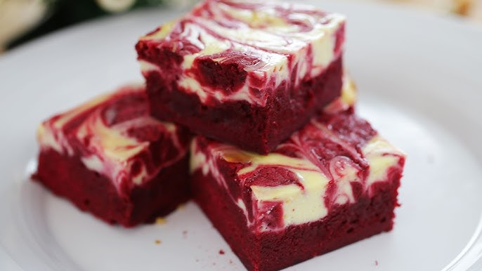

- 1/2 cup (120g) unsalted butter, room temperature
- 3/4 cup (180g) sugar
- 2 eggs
- 1 cup (120g) flour
- 2 tbsp cocoa powder
- 1/4 tsp salt
- 1 tbsp red food colouring
- 1 tbsp distilled white vinegar
- 1 tsp vanilla extract
- 240g cream cheese, room temperature
- 1 egg
- 45g sugar
- 1 tsp vanilla extract
- Line a 7' sqaure baking tin with parchment paper and preheat oven to 170C or 340F.
- Mix butter and sugar with a mixer until pale and creamy. Then, beat in one egg at a time. *If you do not have a mixer, using a whisk will do the job.
- Mix in red food colouring, vinegar, and vanilla extract into the brownie batter until well combined.
- In a separate bowl, sift flour, cocoa powder, and salt together. Then, fold the dry ingredients into the batter gently.
- Reserve 1/4 of the batter and pour the rest into the baking tin.
- In another bowl, mix the cream cheese and sugar until smooth. *A fork will do.
- Mix in the egg and vanilla extract into the mixture until well combined.
- Pour the cream cheese batter on top of the brownie layer evenly then, dot the top with the remaining brownie batter.
- Use a knife or a toothpick to create swirls on the layer. Be careful not to disrupt the bottom layer.
- Bake for 30 minutes until brownies have set.
- Cool and refrigerate before serving.